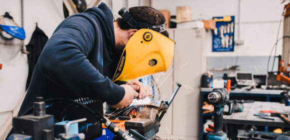
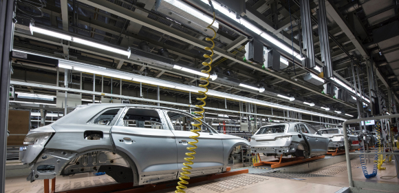

<section class="about">
  <div class="container">
    <h2 class="about__title">
      О предприятии
    </h2>
    <div class="about__offset grid">
      <div class="about__left">
        <p class="about__descr">За&nbsp;20&nbsp;лет развития в&nbsp;структуре завода сформирован мощный производственный
          потенциал, научно-технический центр, испытательная лаборатория, современная база, учебный центр и&nbsp;широкая
          сеть региональных и&nbsp;международных представительств в&nbsp;Российской Федерации, Республике Беларусь,
          Узбекистане и&nbsp;Казахстане.
        </p>
        <p class="about__descr"> Ежегодно НПП «ПИОНЕР» реализует несколько проектов по модернизации серийных
          и разработке новых приборов,
          призванные в наибольшей степени удовлетворять возрастающие требования наших заказчиков </p>

        
      </div>
      <div class="about__right">
        <p class="about__descr"> В номенклатуре выпускаемой НПП «ПИОНЕР» продукции найдется все, что необходимо для
          успешного решения задачи
          автоматизации технологических процессов на любом предприятии. Все средства измерения производства «ПИОНЕР»
          внесены
          в Государственный реестр СИ и имеют необходимые разрешительные документы.</p>
        
      </div>
    </div>


  </div>
</section>
